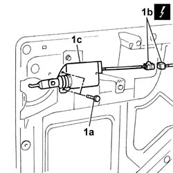

7020P22 motor of rear swinging door lock - r r with door panel removed
- Path
- Procedures > 70 FITTINGS > 7020 LOAD CARRYING COMPARTMENT DOORS > 7020P swinging rear door central locking > 7020P22 motor of rear swinging door lock - r r with door panel removed
- Kind
- repair procedure (removal / refitting; the operation number is the code)
- Applies to
- all engines; all production periods
- Interactive page
- https://sloeber94.github.io/elrnDB-fDbl/en/#/2585096
Applies to: all engines; all production periods
 Removing
Removing
 Refitting
RefittingDisconnect the battery negative terminal.
1. Undo the bolts (1a), disconnect the electrical connector (1b) and remove the motor (1c).
 | Name | Connector |
|---|---|---|
1b | Right rear door lock geared motor |

Applies to: all engines; all production periods
Refitting
RemovingFit the lock motor in its seating and secure it with its bolts.
Connect the electrical connector.
| Name | Connector |
|---|---|---|
- | Right rear door lock geared motor |
Connect the battery negative terminal.